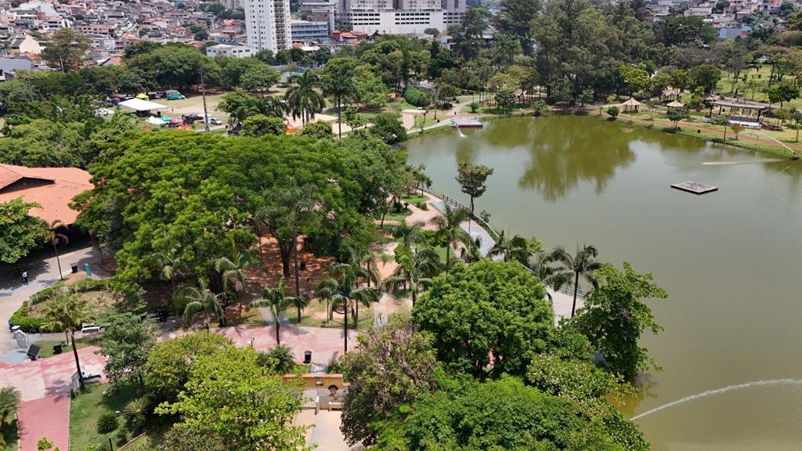
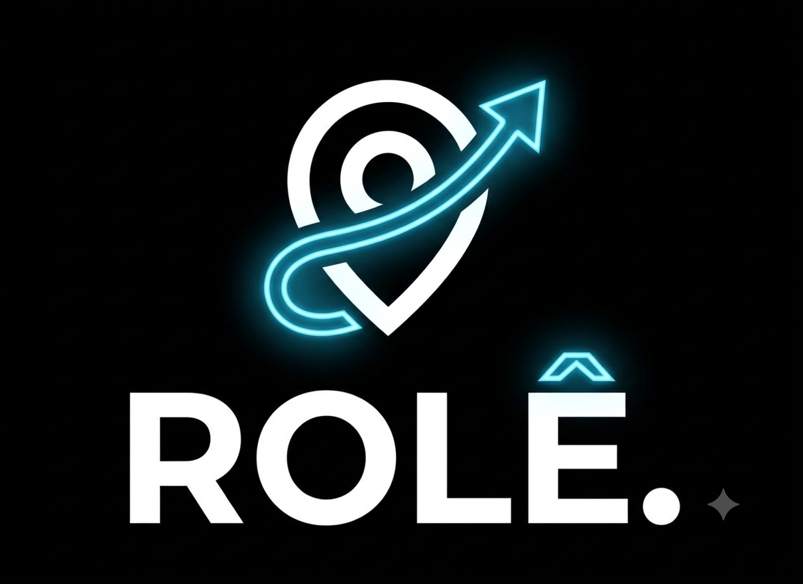
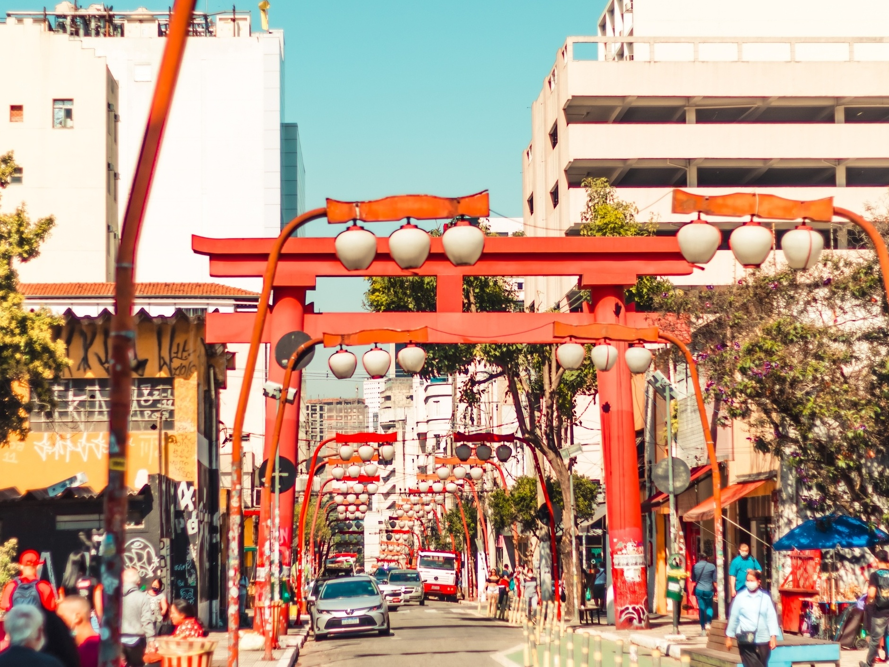
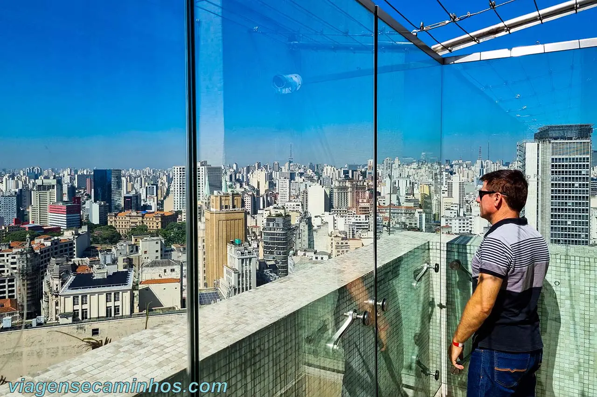

Parque Municipal Dom José
Um movimentado centro esportivo e recreativo da cidade com lago, pedalinhos, trilhas e área infantil, um espaço perfeito para relaxar e se divertir com os amigos.
📍 Barueri • GratuitoO melhor site para fazer você deixar de ser dependente nas telas. Aqui temos lugares pertinho de você pra encontrar os amigos, gastar pouco e ver gente de verdade.


Um movimentado centro esportivo e recreativo da cidade com lago, pedalinhos, trilhas e área infantil, um espaço perfeito para relaxar e se divertir com os amigos.
📍 Barueri • Gratuito
O shopping mais "queridinho" da região, tendo uma ampla variedade de lojas e serviços, uma praça de alimentação diversa e um cinema (cinemark) sempre atualizado nas novas tendências, um ótimo lugar para passar o tempo com os amigos, ou até mesmo sozinho.
📍Barueri (Tamboré) • Gratuito
Uma pista de patinação estilo anos 80 que combina música, diversão e muita energia em um ambiente descontraído. Chame os amigos, coloque os patins e aproveite uma experiência diferente e cheia de movimento.
📍São Paulo (Moema e Mooca) • A entrada varia entre R$30,00 e R$40,00
A Liberdade é um bairro vibrante e cheio de cultura, conhecido por seus restaurantes, lojinhas, cafés e influência asiática. É um lugar perfeito para passear, experimentar comidas diferentes e descobrir cantinhos cheios de personalidade, um lugar ideal para sair com seus amigos estilo mais "geek" e ter experiências novas!
📍São Paulo (Liberdade) • Gratuito
O Farol Santander é um espaço cultural no centro de São Paulo, com exposições que se diversificam cada vez mais a cada semana, arte, história e experiências diferentes. É uma ótima opção para passear, conhecer coisas novas e aproveitar a vista e a arquitetura do prédio com seus amigos.
📍São Paulo • R$ 45,00 InteiraTem uma dúvida, sugestão ou quer indicar um lugar? Manda pra gente